When a Tiered Rate is provisioned to the ME, the definitions of the associated Rates and Counters are created on the ME. If a Tiered Rate is unprovisioned from the ME, then the definitions of the associated Rates and Counters are removed from the ME.
 Note:
Note:When a tiered rate is created, the associated rates are also created with the following naming convention:
Tiered Rate Name_TierName_Primary and Tiered Rate Name_TierName_Secondary
- A Tiered Rate cannot be updated after it is provisioned.
- Rate rounding factor, tax, discounts, and slice reduction are not supported for this feature.
- Upon creating and provisioning a Tiered Rate, associated rates are implicitly created. The name of the created rate follows the naming convention TieredRateName_TierName_Primary and TieredRateName_TierName_SecondaryRates. The same name cannot be used to explicitly create the rates.
- When a Tiered Rate is created, the corresponding counter with the same name as Tiered Rate is also created. Hence, other counters cannot be created using the same name.
- Consumption counter is reset to zero at BCR.
- Charging is based on direct debit. If the funds are insufficient for a call, then call fails with an error response.
- BCR time should be configured such that the BCR event is triggered between last request of the month and first request of the next month to ensure monthly fee and counter resets are done correctly.
Examples
- Electricity usage is regularly reported in diameter calls.
- Zero usage case where rating is done based on another rate.
| Service Fee against customer services (EGP) | Consumption category during a month | Tier | Step | Step From(KWH) | Step To (KWH) | Rate (EGP/KWH) | Comment |
|---|---|---|---|---|---|---|---|
| 1 | Consumption less than 100 KWH | Tier1 | Step1 | 0 | 50 | 0.48 | Consumption between 0 to 50 KWH is charged with rate 0.48 EGP/KWH. |
| 2 | Step2 | 51 | 100 | 0.58 | Consumption between 51 to 100 KWH is charged with rate 0.58 EGP/KWH. | ||
| 6 | Consumption more than 100 KWH and less than or equal to 650 KWH | Tier2 | Step1 | 0 | 200 | 0.77 | All consumption between 0 - 200 KWH will be charged with rate 0.77 EGP/KWH |
| 11 | Step2 | 201 | 350 | 1.06 | Consumption between 201 to 350 KWH is charged with rate 1.06 EGP/KWH. | ||
| 15 | Step3 | 351 | 650 | 1.18 | Consumption between 351 to 650 KWH is charged with rate 1.18 EGP/KWH. | ||
| 25 | Consumption more than 650 KWH with the
following options:
|
Tier3 | Step1 | 0 | 1000 | 1.28 | Consumption between 0 to 1000 KWH is charged with rate 1.28 EGP/KWH. |
| 40 | Tier4 | Step1 | 0 | Any | 1.45 | Consumption starting from 0 and going beyond 1000 KWH is charged with rate 1.45 EGP/KWH (considering whole consumption when the consumption value is more than 1000 KWH) | |
| 9 | Meter with zero consumption or closed meter | NA | NA | NA | Separate trigger from the network with different rating group. |
- A Tiered Rate is created for residential electricity billing.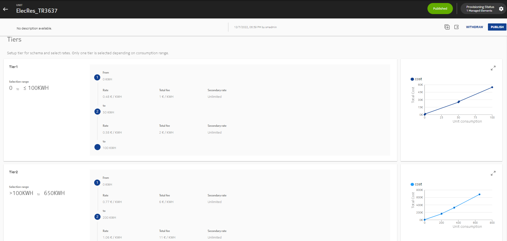 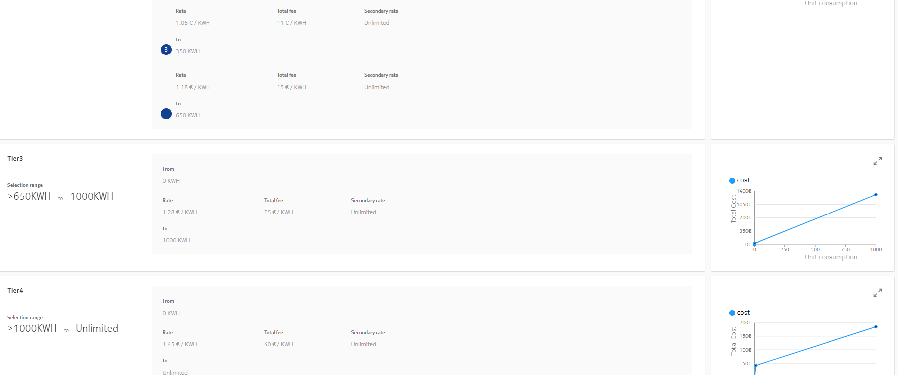
- Tiered Rate is referred in a Charging Logic. In Charging Logic, the
Tiered Rate is selected based on the type of call
(Prepaid/Postpaid/Residential/Commercial).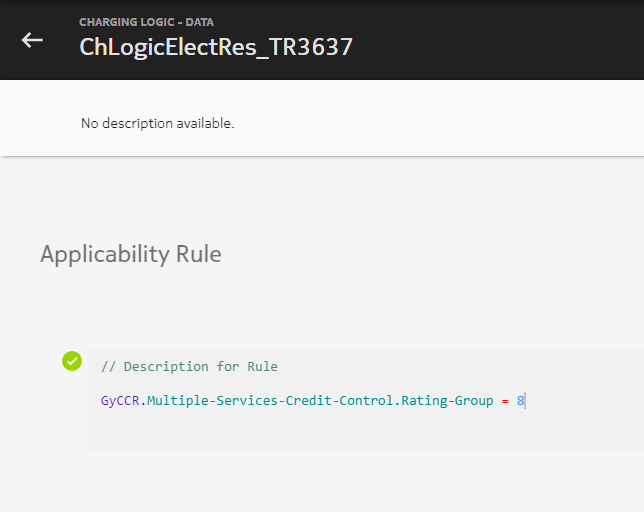 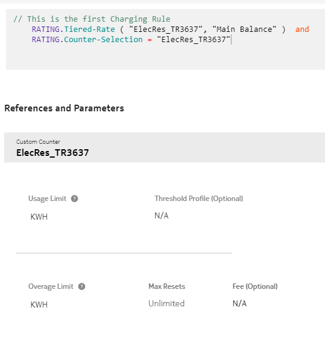
- When a Tiered Rate is created on SM, the corresponding counter with the
same name as Tiered Rate is also created. This counter is used for
electricity usage accumulation and rating usage based on the tiered
rate. For each tier in a tiered rate, a primary and secondary rate is
created at ME with the following naming
convention:
TieredRateName_TierName_Primary and TieredRateName_TierName_Secondary.
If the step fee and secondary rate/unit are not defined while creating a tiered rate, then secondary rates are created with the rate/unit as 0.Note: - For zero usage in request, rule configuration is as follows: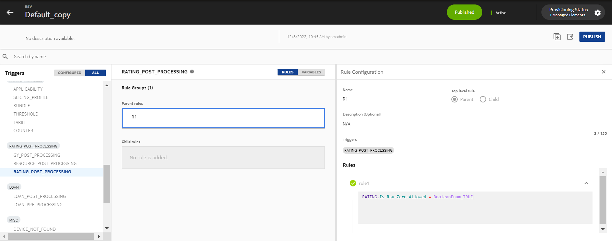
- Rate is created for zero usage or closed meter rating. It is referred in
the Charging Logic.
 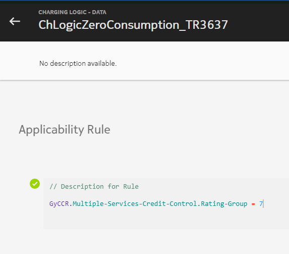
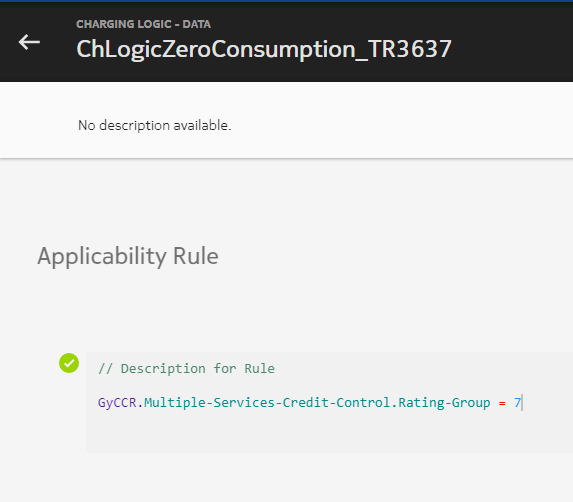
- A service is created and both charging logics are added to it.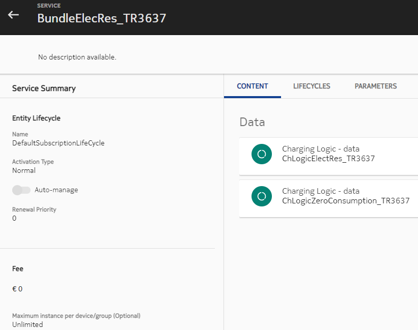
- The service is subscribed through an Account: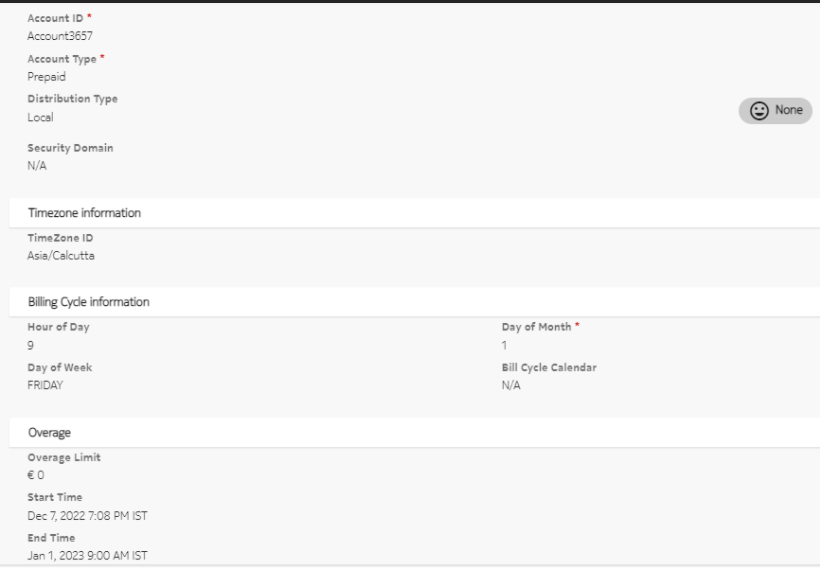
Execution:
- An IEC call is made to report usage of 15 KWH.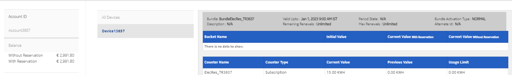
15 is between 0-50 (Tier1/Step1) 15 * 0.48 = 7.2 Service Fee = 1 3000-8.2 = 2991.80 - An IEC call is made to report usage of 50 KWH.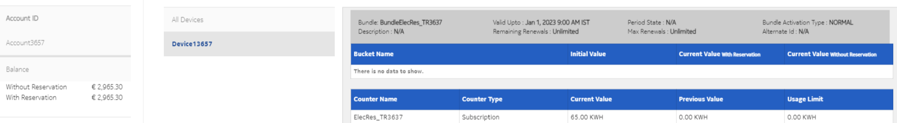
35 x 0.48 = 16.8 (Tier1/Step1) 15 x 0.58 = 8.7 (Tier1/Step2) Total Charges = 16.8 + 8.7 = 25.5 Service Fee = Total Fee - Fee already deducted = 2 - 1 = 1 2991.80-26.5 = 2965.30 - An IEC call is made to report usage of 350 KWH.
200*0.77=154 (Tier2/Step1) 150*1.06=159 (Tier2/Step2) 65*1.18=76.7 (Tier2/Step3) Total = 389.7 +15(SF)= 404.7 404.7-34.7(Already paid) = 370 2965.30 – 370 = 2595.3 - An IEC call is made to report usage of 400 KWH.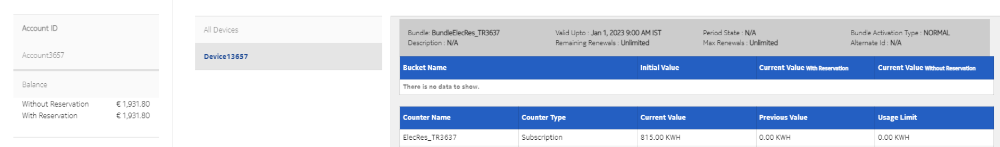
400 (Tier3) 815 x 1.28 = 1043.2 1043.2+25(SF)=1068.2 1068.2-404.7(Already paid)=663.5 2595.3-663.5 = 1931.8 - An IEC call is made to report usage of 300 KWH.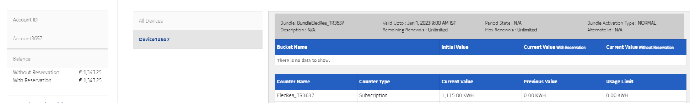
300 (Tier4) 1115X1.45=1616.75 1616.75+40(SF)=1656.75 1656.75-1068.2(Already paid)=588.55 1931.8-588.55 = 1343.25 - Zero call cost with service fee of 9.
Zero call cost only Service Fee=9 1343.25-9 = 1334.25If any other usage other than 0 is reported, then a fixed fee of 9 is deducted.
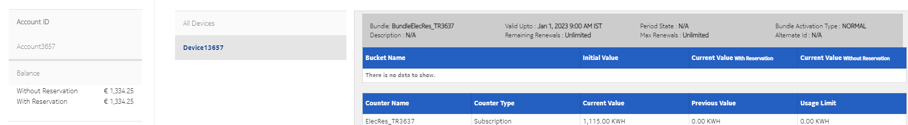
A separate Tiered Rate is created for residential water consumption, non-residential water consumption, and sewage for nonresidential and residential.
Fixed monthly fees is configured as bundle fees. The bundle fees is charged for the configured period based on Renew Subscription action in lifecycle. The Tiered Rate counter is reset along with the subscription.
If the available balance is insufficient to charge a call, then call is rejected with error code 4012.
- Device type = Prepaid
- Overage limit = 10 EGP
- Main balance = -7 EGP
-
Direct debit charging request is executed to charge the usage. Calculated cost = 5 EGP
-
Call cost (5 EGP)is less than the available credit limit (3 EGP). Hence, charging fails and a notification is generated for credit limit reached.
The next step fees configured can be equal to or greater than the previous step fees across the tiers.
In this case, the calculated cost for requested units and previously committed counter units together can be less than the actual cost deducted for the previously committed counter units. Hence, the remaining amount (difference of calculated cost based on requested units and previously committed counter units, and previously charged cost of counter committed units) is refunded to the resource balance.
For example:
Tier 1: Range 0 to 10, rate/unit: 6, step fee: 11
Tier 2: Range 10 to unlimited, rate/unit: 2, step fee: 10
Initial bucket balance: 500
Call 1: IEC call with RSU = 9
Cost = 9*6 + 11 = 65
Bucket balance: 500 - 65 = 435
Call 2: IEC call with RSU = 12
Tier rate changes from tier1 to tier 2. Hence, the consumption is done from tier 2.
Previously charged amount based on cost calculated for committed counter value is 65
New cost calculated for committed counter value + requested units = (9 + 12 = 21) = 21*2 + 10 = 52
The new cost is less than the previously charged amount.
Amount to be deducted: (52 - 65) = -13. Hence, 13 will be refunded back to bucket balance
Final bucket balance = 435 + 13 = 448
If there are multiple resources attached to a device, then deductions are done based on priority.
For example: If the calculated cost for a call is greater than first priority resource balance, then the balance is exhausted and the next resource is considered for deducting the remaining amount. In this case, the refund happens in the top priority resource which is the secondary balance.
When the amount to be refunded is greater than the initial capacity of the top priority resource, then the refund happens considering the initial capacity of the resource. During the refund, if the refund results in the current value being greater than the initial value, then the refund amount is adjusted in a way that the refund increases the current value only till the initial value. The remaining refund amount is lost. It is not credited in any other resource.